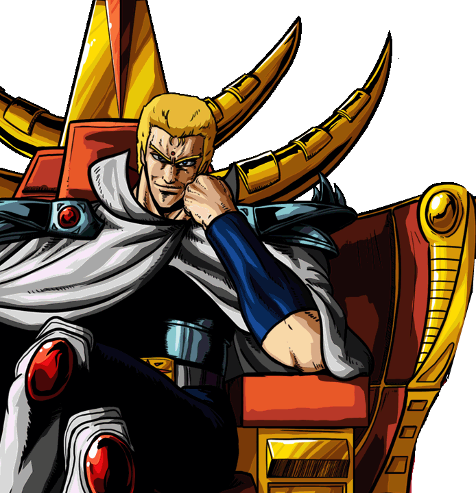

Successore del Nanto Hoo Ken (Pugno della Fenice di Nanto), la tecnica suprema che non ammette posizioni di guardia in quanto incarna l'attacco assoluto. In seguito a un trauma giovanile, Souther ha rinnegato l'amore e la compassione, autoproclamandosi Sacro Imperatore. Il suo corpo nasconde un segreto genetico (i punti di pressione invertiti) che lo rende immune alle letali tecniche dell'Hokuto Shinken.